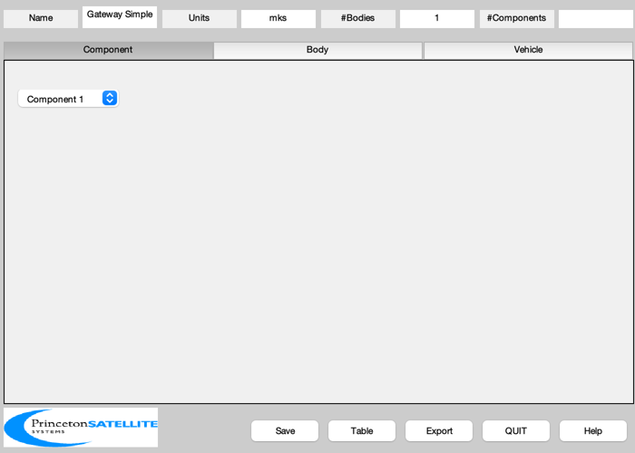
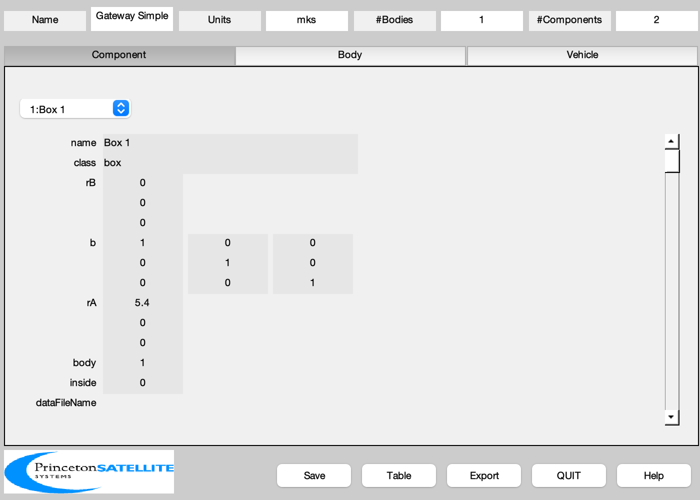
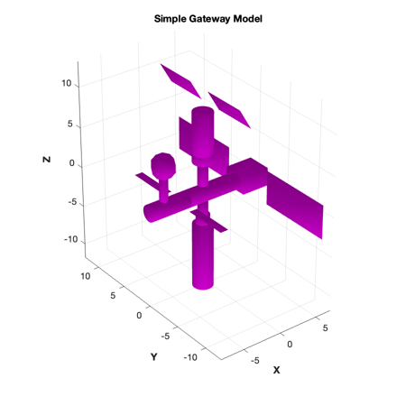
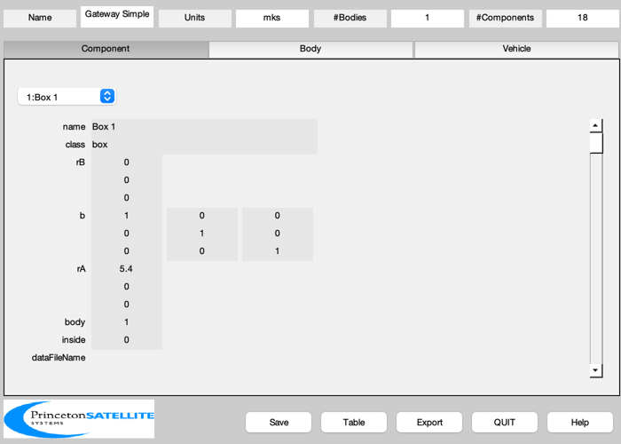
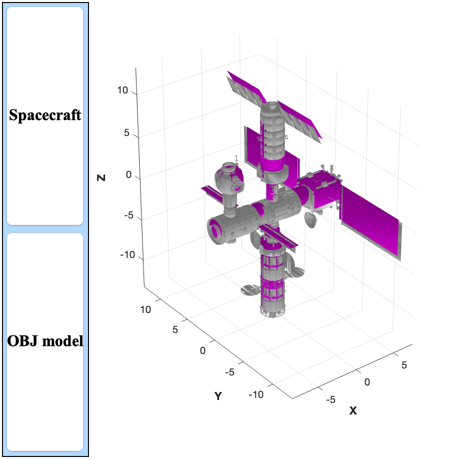

Build Simple Gateway CAD Model
Create a model from primitives. This shares the major surface areas but requires only 460 faces compares to 85315 in the OBJ-derived model. This will create two 3D views, one of the simple model and another with the original model overlaid. Saves the file GatewaySimple.mat
See also: BuildCADModel, CreateComponent, AggregateComponents, ShowCAD, SaveStructure
Contents
%-------------------------------------------------------------------------- % Copyright (c) 2022 Princeton Satellite Systems, Inc. % All Rights Reserved. %-------------------------------------------------------------------------- % Since version 2023.1 %-------------------------------------------------------------------------- % Build the CAD model BuildCADModel( 'initialize' ); BuildCADModel( 'set name' , 'Gateway Simple' ); BuildCADModel( 'set units', 'mks' ); m = CreateBody( 'make', 'name', 'Core' ); BuildCADModel('add body', m ); BuildCADModel( 'compute paths' );
Box
m = CreateComponent( 'make', 'box', 'x',3.4,'y',3,'z',2.2,... 'faceColor', [1 0 1],... 'inside',0, 'rA', [5.4;0;0], 'mass', 1, 'name', 'Box 1', 'body', 1 ); BuildCADModel( 'add component', m ); m = CreateComponent( 'make', 'sphere', 'radius',1.5,... 'faceColor', [1 0 1],... 'inside',0, 'rA', [-6;0;5.1], 'mass', 1, 'name', 'Sphere', 'body', 1 ); BuildCADModel( 'add component', m );
Cylinders
n = 12; rA = [-14 -11 -10 -8 -3 -6 -0.75 -0.75 -0.75 -0.75 -0.75 -0.75;... 0 0 0 0 0 0 0 0 0 0 0 0;... 0 0 0 0 0 0.8 3.9 5 -11.8 -3.7 -2.6 1.1]; rU = [ 1.8 1.9 1 1 1 0.5 1.2 1.2 1.2 0.8 0.6 0.6]; rL = [ 1.8 1.9 1.9 1 1 0.5 1.2 1.2 1.2 0.8 0.6 0.6]; l = [ 3 1.2 2 5 7.4 3.4 1.5 5 8 1.1 1.5 2.6]; name = {'Orion SM' 'Orion TS' 'Orion' 'Module 1' 'Module 2' ... 'Module 3' 'Module 4' 'Module 5' 'Module 6' 'Module 7'... 'Module 8' 'Module 9' 'Module 10' 'Module 11' 'Module 12'}; bX = [0 0 1;0 1 0;-1 0 0]; e = eye(3); b = {bX bX bX bX bX e e e e e e e e}; for j = 4:n m = CreateComponent( 'make', 'cylinder', 'rUpper', rU(j), 'rLower', rL(j), 'h', l(j), 'n', 20, 'b', b{j}, ... 'faceColor', [1 0 1],... 'inside',0, 'rA', rA(:,j), 'mass', 1, 'name', name{j}, 'body', 1 ); BuildCADModel( 'add component', m ); end n = 10; bY = [CosD(30) 0 -SinD(30);0 1 0; SinD(30) 0 CosD(30)]; b9 = [0 0 1;0 1 0;-1 0 0]; b1 = [1 0 0;0 CosD(30) -SinD(30); 0 SinD(30) CosD(30)]; b2 = [1 0 0;0 CosD(150) -SinD(150); 0 SinD(150) CosD(150)]; b3 = [1 0 0;0 CosD(210) -SinD(210); 0 SinD(210) CosD(210)]; b4 = [1 0 0;0 CosD(330) -SinD(330); 0 SinD(330) CosD(330)]; b = {b1 b2 b3 b4 b9 b9 bY bY eye(3) eye(3) }; x = ones(1,10)*0.01; y = [5.5 5.5 5.5 5.5 5.4 5.4 5.4 5.4 9.3 9.3]; z = [0.75 0.75 0.75 0.75 1 1 3 3 4.2 4.2]; rA = [-11 -11 -11 -11 -0.8 -0.8 2.5 2.5 8.5 8.5; ... 4 -4 -4 4 -5 5 4.2 -4.2 -8 8; ... 3 3 -2 -3 0 0 11.8 11.8 0 0]; rA(1,:) = rA(1,:) - 3; name = {'Orion Array 1' 'Orion Array 2' 'Orion Array 3' 'Orion Array 4' ... 'Mid Array 1' 'Mid Array 2' 'Top Array 1' 'Top Array 2' ... 'Big Array 1' 'Big Array 2'}; for j = 5:n m = CreateComponent( 'make', 'box', 'x', x(j), 'y', y(j), 'z', z(j), 'b', b{j}, ... 'faceColor', [1 0 1],... 'inside',0, 'rA', rA(:,j), 'mass', 1, 'name', name{j}, 'body', 1 ); BuildCADModel( 'add component', m ); end
Update the mass properties to produce the tables
g = BuildCADModel( 'get model'); v = AggregateComponents(g.component); ShowCAD( g ); title('Simple Gateway Model') SaveStructure(g,'GatewaySimple');
Show against original model
m = load('Gateway.mat'); % original model from OBJ file(s) s = size(m.component.v); BuildCADModel( 'add component', m.component ); BuildCADModel('add subsystem','OBJ model',{'Gateway'}) BuildCADModel('show vehicle') disp('How many fewer faces in the simpler model?') size(v) - s %-------------------------------------- % $Id: eb212ff6fb77e93553a8992ac46781b3ccedaba5 $
How many fewer faces in the simpler model?
ans =
-84855 0
 